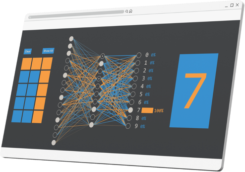

Ziffern erkennen mit Nueornalem Netz
Interatkive Einheit über die Ziffernerkennnung!

Neuronale Netze sind ein zentrales Konzept des maschinellen Lernens und bilden die Grundlage vieler moderner KI-Anwendungen. Doch wie genau „lernt“ ein solches Netz, handgeschriebene Zahlen zu erkennen? Mithilfe der interaktiven Anwendung von "Hart und Trocken" hast du die Möglichkeit, selbst Ziffern aus Pixeln zu zeichnen und zu beobachten, wie das neuronale Netz trainiert wird, um Muster in Ziffern zu identifizieren, damit diese eraknnt werden.

Technische
Voraussetzungen
- stabile Internetverbindung
- aktueller Webbrowser
(Firefox, Chrome, Safari, etc.) - Computer/Laptop empfohlen
- JavaScript muss im Browser aktiviert sein
Beantworte die Fragen Q1 bis Q5!